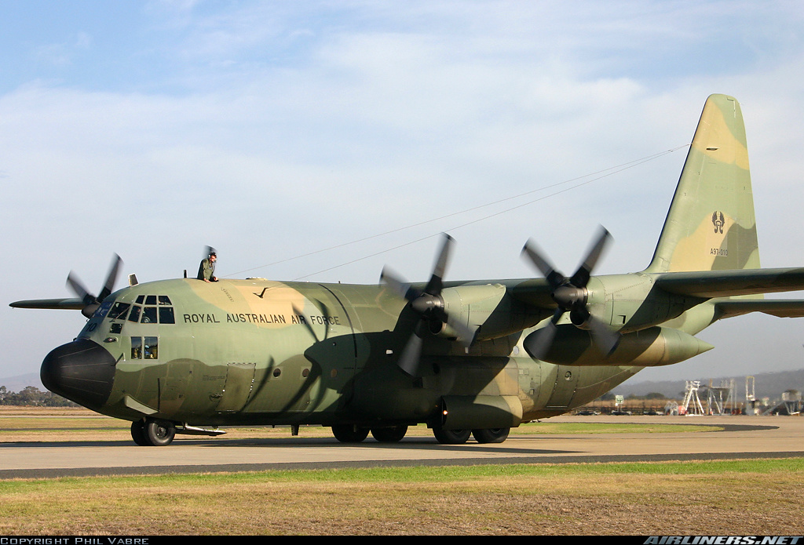
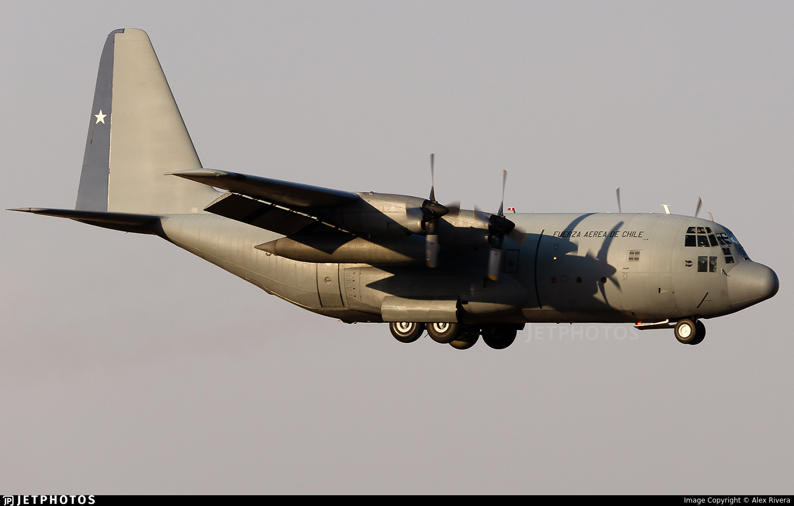

Lockheed C-130 Hercules — это легендарный «грузовик с крыльями», ставший эталоном военно-транспортной авиации благодаря своей способности работать там, где спасуют даже современные лайнеры.
В движение 70-тонного гиганта приводят 4 турбовинтовых двигателя Allison T56 мощностью по 4591 л.с. каждый, позволяющие разгоняться до 600 км/ч и доставлять 20 000 кг груза на расстояние до 3800 км.
Хотя штатный транспортник не имеет пушечного вооружения, он защищен 1 мощным комплексом бортовой обороны с автоматическим отстрелом тепловых ловушек, а его грузовой отсек легко вмещает 92 десантника или тяжелые бронеавтомобили.
За 70 лет службы эта машина доказала, что сочетание 4 винтов и прямой формы крыла — это идеальная формула для спасательных операций и оперативной переброски войск в любую точку планеты.